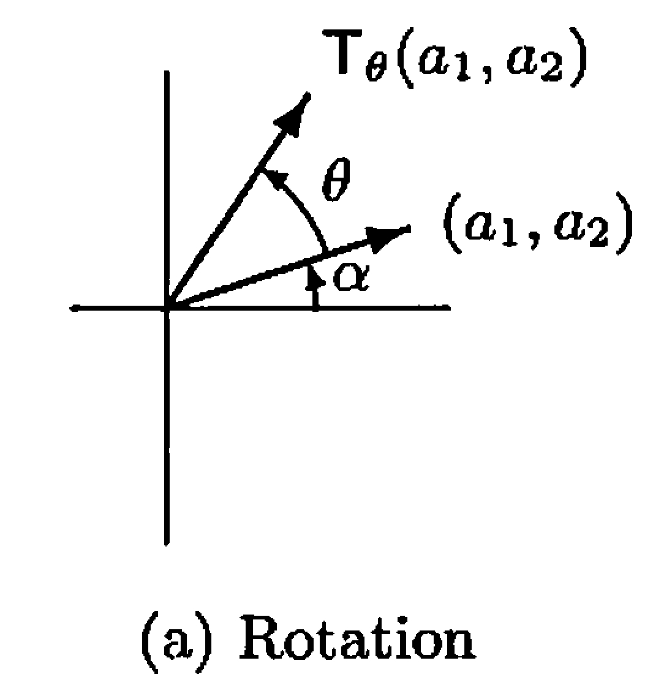
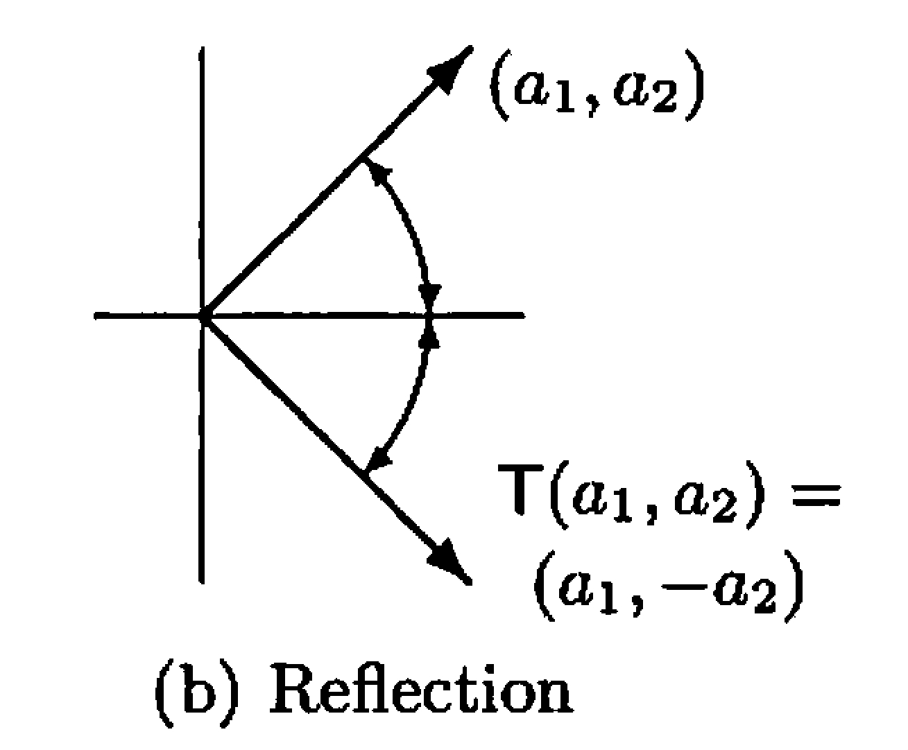
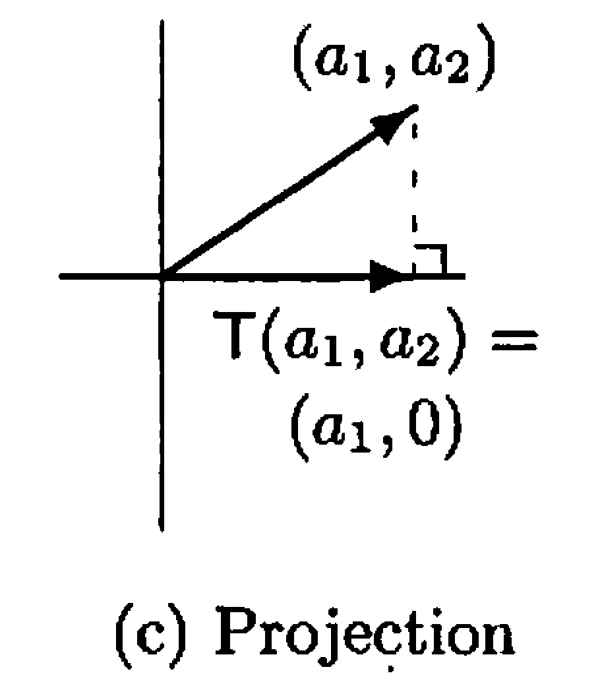

§ 8. Linear Transformations, Null Spaces, and Ranges¶
Definition and Examples of Linear Transformation¶
Definition 8.1 : Linear Transformation
Let \(V\) and \(W\) be vector spaces (over \(F\)). We call a function \(T: V \rightarrow W\) a linear transformation from \(V\) to \(W\) if, for all \(x, y \in V\) and \(c \in F\), we have
- (a) \(T(x+y)=T(x)+T(y)\) and
- (b) \(T(c x)=c T(x)\).
We often simply call \(T\) linear.
Concept 8.2 : Properties of linear transformation
- If \(T\) is linear, then \(T(0)=0\).
- \(T\) is linear if and only if \(T(c x+y)=c T(x)+T(y)\) for all \(x, y \in V\) and \(c \in F\).
- If \(T\) is linear, then \(T(x-y)=T(x)-T(y)\) for all \(x, y \in V\).
-
\(T\) is linear if and only if, for \(x_{1}, x_{2} \ldots, x_{n} \in V\) and \(a_{1}, a_{2}, \ldots, a_{n} \in F\), we have
\[ T\left(\sum_{i=1}^{n} a_{i} x_{i}\right)=\sum_{i=1}^{n} a_{i} T\left(x_{i}\right) \]
We generally use property 2 to prove that a given transformation is linear.
Example 8.3 : Rotation by \(\theta\) is linear.

Figure 8.1.
For any angle \(\theta\), define \(T_{\theta}: \mathbb{R}^2 \rightarrow \mathbb{R}^2\) by the rule: \(T_{\theta}\left(a_{1}, a_{2}\right)\) is the vector obtained by rotating \(\left(a_{1}, a_{2}\right)\) counterclockwise by \(\theta\) if \(\left(a_{1}, a_{2}\right) \neq(0,0)\), and \(T_{\theta}(0,0)=(0,0)\). Then \(T_{\theta}: \mathbb{R}^2 \rightarrow \mathbb{R}^2\) is a linear transformation that is called the rotation by \(\theta\).
We determine an explicit formula for \(T_{\theta}\). Fix a nonzero vector \(\left(a_{1}, a_{2}\right) \in \mathbb{R}^{2}\). Let \(\alpha\) be the angle that \(\left(a_{1}, a_{2}\right)\) makes with the positive \(x\)-axis, and let \(r=\sqrt{a_{1}^{2}+a_{2}^{2}}\). Then \(a_{1}=r \cos \alpha\) and \(a_{2}=r \sin \alpha\). Also, \(T_{\theta}\left(a_{1}, a_{2}\right)\) has length \(r\) and makes an angle \(\alpha+\theta\) with the positive \(x\)-axis. It follows that
Finally, observe that this same formula is valid for \(\left(a_{1}, a_{2}\right)=(0,0)\). It is now easy to show that \(T_{\theta}\) is linear.
Example 8.4 : Reflection about the \(x\)-axis is linear.

Figure 8.2.
Define \(T: \mathbb{R}^2 \rightarrow \mathbb{R}^2\) by \(T\left(a_{1}, a_{2}\right)=\left(a_{1},-a_{2}\right)\). \(T\) is called the reflection about the \(x\)-axis. It can be shown that \(T\) is also a linear transformation.
Example 8.5 : Projection on the \(x\)-axis is linear.

Figure 8.3.
Define \(T: \mathbb{R}^2 \rightarrow \mathbb{R}^2\) by \(T\left(a_{1}, a_{2}\right)=\left(a_{1}, 0\right)\). \(T\) is called the projection on the \(x\)-axis. It can be shown that \(T\) is also a linear transformation.
Example 8.6 : Taking derivative of polynomials are linear.
Define \(T: \mathrm{P}_{n}(\mathbb{R}) \rightarrow \mathrm{P}_{n-1}(\mathbb{R})\) by \(T(f(x))=f^{\prime}(x)\), where \(f^{\prime}(x)\) denotes the derivative of \(f(x)\). To show that \(T\) is linear, let \(g(x), h(x) \in \mathrm{P}_{n}(\mathbb{R})\) and \(a \in \mathbb{R}\). Now \(T\) is linear since
Example 8.7 : Taking the definite integral of functions is linear.
Let \(V=\mathcal{C}(\mathbb{R})\), the vector space of continuous real-valued functions on \(\mathbb{R}\). Let \(a, b \in \mathbb{R}, a<b\). Define \(T: V \rightarrow \mathbb{R}\) by
for all \(f \in V\). Then \(T\) is a linear transformation because the definite integral of a linear combination of functions is the same as the linear combination of the definite integrals of the functions.
Null Space and Range¶
Definition 8.8 : Identity Transformation / Zero Transformation
For vector spaces \(V\) and \(W\) (over \(F\)), we define the identity transformation \(I_{V}: V \rightarrow V\) by \(I_{V}(x)=x\) for all \(x \in V\) and the zero transformation \(T_{0}: V \rightarrow W\) by \(T_{0}(x)=0\) for all \(x \in V\). It is clear that both of these transformations are linear. We often write \(I\) instead of \(I_{V}\).
Definition 8.9 : Null Space / Range
Let \(V\) and \(W\) be vector spaces, and let \(T: V \rightarrow W\) be linear. We define the null space (or kernel) \(N(T)\) of \(T\) to be the set of all vectors \(x\) in \(V\) such that \(T(x)=0\); that is, \(N(T)=\{x \in V: T(x)=0\}\).
We define the range (or image) \(R(T)\) of \(T\) to be the subset of \(W\) consisting of all images (under \(T\)) of vectors in \(V\); that is, \(R(T)=\{T(x): x \in V\}\).
Theorem 8.10 : Null space and range are subspaces.
Let \(V\) and \(W\) be vector spaces and \(T: V \rightarrow W\) be linear. Then \(N(T)\) and \(R(T)\) are subspaces of \(V\) and \(W\), respectively.
Proof
To clarify the notation, we use the symbols \(0_{V}\) and \(0_{W}\) to denote the zero vectors of \(V\) and \(W\), respectively.
Since \(T\left(0_{V}\right)=0_{W}\), we have that \(0_{V} \in N(T)\). Let \(x, y \in N(T)\) and \(c \in F\). Then \(T(x+y)=T(x)+T(y)=0_{W}+0_{W}=0_{W}\), and \(T(c x)=c T(x)=c 0_{W}=0_{W}\). Hence \(x+y \in N(T)\) and \(c x \in N(T)\), so that \(N(T)\) is a subspace of \(V\).
Because \(T\left(0_{V}\right)=0_{W}\), we have that \(0_{W} \in R(T)\). Now let \(x, y \in R(T)\) and \(c \in F\). Then there exist \(v\) and \(w\) in \(V\) such that \(T(v)=x\) and \(T(w)=y\). So \(T(v+w)=T(v)+T(w)=x+y\), and \(T(c v)=c T(v)=c x\). Thus \(x+y \in R(T)\) and \(c x \in R(T)\), so \(R(T)\) is a subspace of \(W\).
Theorem 8.11 : Range is spanned by images of a basis.
Let \(V\) and \(W\) be vector spaces, and let \(T: V \rightarrow W\) be linear. If \(\beta=\left\{v_{1}, v_{2}, \ldots, v_{n}\right\}\) is a basis for \(V\), then
Proof
Clearly \(T\left(v_{i}\right) \in R(T)\) for each \(i\). Because \(R(T)\) is a subspace, \(R(T)\) contains \(\operatorname{span}\left(\left\{T\left(v_{1}\right), T\left(v_{2}\right), \ldots, T\left(v_{n}\right)\right\}\right)=\operatorname{span}(T(\beta))\) by Theorem 4.3.
Now suppose that \(w \in R(T)\). Then \(w=T(v)\) for some \(v \in V\). Because \(\beta\) is a basis for \(V\), we have
Since \(T\) is linear, it follows that
So \(R(T)\) is contained in \(\operatorname{span}(T(\beta))\).
Note that Theorem 8.11 can be generalized to the case of infinite basis. (Exercise 8.33)
Definition 8.12 : Nullity, Rank
Let \(V\) and \(W\) be vector spaces, and let \(T: V \rightarrow W\) be linear. If \(N(T)\) and \(R(T)\) are finite-dimensional, then we define the nullity of \(T\), denoted \(\operatorname{nullity}(T)\), and the rank of \(T\), denoted \(\operatorname{rank}(T)\), to be the dimensions of \(N(T)\) and \(R(T)\), respectively.
Theorem 8.13 : Dimension Theorem
Let \(V\) and \(W\) be vector spaces, and let \(T: V \rightarrow W\) be linear. If \(V\) is finite-dimensional, then
Proof
Suppose that \(\operatorname{dim}(V)=n, \operatorname{dim}(N(T))=k\), and \(\left\{v_{1}, v_{2}, \ldots, v_{k}\right\}\) is a basis for \(N(T)\). By Corollary 6.15, we may extend \(\left\{v_{1}, v_{2}, \ldots, v_{k}\right\}\) to a basis \(\beta=\left\{v_{1}, v_{2}, \ldots, v_{n}\right\}\) for \(V\). We claim that \(S=\left\{T\left(v_{k+1}\right), T\left(v_{k+2}\right), \ldots, T\left(v_{n}\right)\right\}\) is a basis for \(R(T)\).
First we prove that \(S\) generates \(R(T)\). Using Theorem 8.11 and the fact that \(T\left(v_{i}\right)=0\) for \(1 \leq i \leq k\), we have
Now we prove that \(S\) is linearly independent. Suppose that
Using the fact that \(T\) is linear, we have
So
Hence there exist \(c_{1}, c_{2}, \ldots, c_{k} \in F\) such that
Since \(\beta\) is a basis for \(V\), we have \(b_{i}=0\) for all \(i\). Hence \(S\) is linearly independent. Notice that this argument also shows that \(T\left(v_{k+1}\right), T\left(v_{k+2}\right), \ldots, T\left(v_{n}\right)\) are distinct; therefore \(\operatorname{rank}(T)=n-k\).
Relation of One-to-One and Onto with Rank and Nullity¶
Theorem 8.14 : One-to-one if and only if null space is trivial.
Let \(V\) and \(W\) be vector spaces, and let \(T: V \rightarrow W\) be linear. Then \(T\) is one-to-one if and only if \(N(T)=\{0\}\).
Proof
Suppose that \(T\) is one-to-one and \(x \in N(T)\). Then \(T(x)=0=T(0)\). Since \(T\) is one-to-one, we have \(x=0\). Hence \(N(T)=\{0\}\).
Now assume that \(N(T)=\{0\}\), and suppose that \(T(x)=T(y)\). Then \(0=T(x)-T(y)=T(x-y)\) by Concept 8.2. Therefore \(x-y \in N(T)=\{0\}\). So \(x-y=0\), or \(x=y\). This means that \(T\) is one-to-one.
Theorem 8.15 : One-to-one, onto, and full rank in equal finite dimensions.
Let \(V\) and \(W\) be vector spaces of equal (finite) dimension, and let \(T: V \rightarrow W\) be linear. Then the following are equivalent.
- (a) \(T\) is one-to-one.
- (b) \(T\) is onto.
- (c) \(\operatorname{rank}(T)=\operatorname{dim}(V)\).
Proof
From the dimension theorem, we have
Now, with the use of Theorem 8.14, we have that \(T\) is one-to-one if and only if \(N(T)=\{0\}\), if and only if \(\operatorname{nullity}(T)=0\), if and only if \(\operatorname{rank}(T)=\operatorname{dim}(V)\), if and only if \(\operatorname{rank}(T)=\operatorname{dim}(W)\), and if and only if \(\operatorname{dim}(R(T))=\operatorname{dim}(W)\). By Theorem 6.14, this equality is equivalent to \(R(T)=W\), the definition of \(T\) being onto.
We note that if \(V\) is not finite-dimensional and \(T: V \rightarrow V\) is linear, then it does not follow that one-to-one and onto are equivalent. (See Exercise 8.15, Exercise 8.16, and Exercise 8.21.)
Theorem 8.16 : One-to-one maps preserve linear independence.
Let \(V\) and \(W\) be vector spaces over a field \(F\), and let \(T : V \to W\) be linear.
-
(a) \(T\) is one-to-one if and only if \(T\) carries linearly independent subsets of \(V\) onto linearly independent subsets of \(W\).
-
(b) Suppose that \(T\) is one-to-one and that \(S \subseteq V\). Then \(S\) is linearly independent if and only if \(T(S)\) is linearly independent.
-
(c) Suppose \(\beta = \{v_1, v_2, \ldots, v_n\}\) is a basis for \(V\) and \(T\) is one-to-one and onto. Then
\[ T(\beta) = \{T(v_1), T(v_2), \ldots, T(v_n)\} \]is a basis for \(W\).
Proof
-
(a)
First suppose that \(T\) is one-to-one. Let \(S = \{v_1, \ldots, v_k\}\) be a linearly independent subset of \(V\). To show that \(T(S)\) is linearly independent, consider a linear relation\[ a_1 T(v_1) + \cdots + a_k T(v_k) = 0 \]for some scalars \(a_1, \ldots, a_k \in F\). By linearity of \(T\),
\[ T(a_1 v_1 + \cdots + a_k v_k) = a_1 T(v_1) + \cdots + a_k T(v_k) = 0. \]Since \(T\) is one-to-one, \(N(T)=\{0\}\), so
\[ a_1 v_1 + \cdots + a_k v_k = 0. \]Because \(S\) is linearly independent, we must have \(a_1 = \cdots = a_k = 0\). Hence \(T(S)\) is linearly independent.
Conversely, suppose that \(T\) carries every linearly independent subset of \(V\) onto a linearly independent subset of \(W\). We show that \(T\) is one-to-one. Let \(v \in V\) satisfy \(T(v) = 0\). If \(v \neq 0\), then the singleton set \(\{v\}\) is linearly independent in \(V\). By assumption, \(T(\{v\}) = \{T(v)\} = \{0\}\) must be linearly independent in \(W\), which is impossible because \(\{0\}\) is linearly dependent. Thus \(v\) must be \(0\), and so \(N(T) = \{0\}\). Therefore, \(T\) is one-to-one.
-
(b)
Now assume that \(T\) is one-to-one and let \(S \subseteq V\).If \(S\) is linearly independent, then by part (a) \(T(S)\) is linearly independent.
Conversely, suppose \(T(S)\) is linearly independent and assume, for contradiction, that \(S\) is linearly dependent. Then there exist distinct vectors \(v_1, \ldots, v_k \in S\) and scalars \(a_1, \ldots, a_k\), not all zero, such that
\[ a_1 v_1 + \cdots + a_k v_k = 0. \]Applying \(T\) and using linearity,
\[ a_1 T(v_1) + \cdots + a_k T(v_k) = T(a_1 v_1 + \cdots + a_k v_k) = T(0) = 0. \]This is a nontrivial linear relation among the vectors \(T(v_1), \ldots, T(v_k)\), so \(T(S)\) is linearly dependent, contradicting our assumption. Hence \(S\) must be linearly independent.
Therefore, when \(T\) is one-to-one, \(S\) is linearly independent if and only if \(T(S)\) is linearly independent.
-
(c) Suppose now that \(\beta = \{v_1, \ldots, v_n\}\) is a basis for \(V\) and that \(T\) is one-to-one and onto.
By part (b), since \(\beta\) is linearly independent and \(T\) is one-to-one, the set
\[ T(\beta) = \{T(v_1), \ldots, T(v_n)\} \]is linearly independent in \(W\).
To show that \(T(\beta)\) spans \(W\), let \(w \in W\). Because \(T\) is onto, there exists \(v \in V\) such that \(T(v) = w\). Since \(\beta\) is a basis for \(V\), we can write
\[ v = a_1 v_1 + \cdots + a_n v_n \]for some scalars \(a_1, \ldots, a_n \in F\). Applying \(T\) and using linearity,
\[ w = T(v) = T(a_1 v_1 + \cdots + a_n v_n) = a_1 T(v_1) + \cdots + a_n T(v_n). \]Thus \(w\) is in the span of \(T(\beta)\).
Therefore \(T(\beta)\) is linearly independent and spans \(W\), so it is a basis for \(W\).
Describing Linear Transformation by its Action on a Basis¶
Theorem 8.17 : Linear transformation is completely determined by its action on a basis.
Let \(V\) and \(W\) be vector spaces over \(F\), and suppose that \(\left\{v_{1}, v_{2}, \ldots, v_{n}\right\}\) is a basis for \(V\). For \(w_{1}, w_{2}, \ldots, w_{n}\) in \(W\), there exists exactly one linear transformation \(T: V \rightarrow W\) such that \(T\left(v_{i}\right)=w_{i}\) for \(i=1,2, \ldots, n\).
Proof
Let \(x \in V\). Then
where \(a_{1}, a_{2}, \ldots, a_{n}\) are unique scalars. Define
-
(a)
\(T\) is linear: Suppose that \(u, v \in V\) and \(d \in F\). Then we may write\[ u=\sum_{i=1}^{n} b_{i} v_{i} \quad \text { and } \quad v=\sum_{i=1}^{n} c_{i} v_{i} \]for some scalars \(b_{1}, b_{2}, \ldots, b_{n}, c_{1}, c_{2}, \ldots, c_{n}\). Thus
\[ d u+v=\sum_{i=1}^{n}\left(d b_{i}+c_{i}\right) v_{i} \]So
\[ T(d u+v)=\sum_{i=1}^{n}\left(d b_{i}+c_{i}\right) w_{i}=d \sum_{i=1}^{n} b_{i} w_{i}+\sum_{i=1}^{n} c_{i} w_{i}=d T(u)+T(v) \] -
(b)
Clearly\[ T\left(v_{i}\right)=w_{i} \quad \text { for } i=1,2, \ldots, n \] -
(c)
\(T\) is unique: Suppose that \(U: V \rightarrow W\) is linear and \(U\left(v_{i}\right)=w_{i}\) for \(i=1,2, \ldots, n\). Then for \(x \in V\) with\[ x=\sum_{i=1}^{n} a_{i} v_{i} \]we have
\[ U(x)=\sum_{i=1}^{n} a_{i} U\left(v_{i}\right)=\sum_{i=1}^{n} a_{i} w_{i}=T(x) . \]Hence \(U=T\).
Note that Theorem 8.17 can be generalized to the case of infinite basis. (Exercise 8.34)
Corollary 8.18
Let \(V\) and \(W\) be vector spaces, and suppose that \(V\) has a finite basis \(\left\{v_{1}, v_{2}, \ldots, v_{n}\right\}\). If \(U, T: V \rightarrow W\) are linear and \(U\left(v_{i}\right)=T\left(v_{i}\right)\) for \(i=1,2, \ldots, n\), then \(U=T\).
Exercise¶
Exercise 8.15
Define
Prove that \(T\) is linear and one-to-one, but not onto.
Exercise 8.16
Let \(T: \mathrm{P}(\mathbb{R}) \rightarrow \mathrm{P}(\mathbb{R})\) be defined by \(T(f(x))=f^{\prime}(x)\). Recall that \(T\) is linear. Prove that \(T\) is onto, but not one-to-one.
Exercise 8.21
Let \(V\) be the vector space of sequences described in Example 2.6. Define the functions \(T, U: V \rightarrow V\) by
\(T\) and \(U\) are called the left shift and right shift operators on \(V\), respectively.
- (a) Prove that \(T\) and \(U\) are linear.
- (b) Prove that \(T\) is onto, but not one-to-one.
- (c) Prove that \(U\) is one-to-one, but not onto.
Definition 8.19 : Projection on \(W_{1}\) along \(W_{2}\)
Let \(V\) be a vector space and \(W_{1}\) and \(W_{2}\) be subspaces of \(V\) such that \(V=W_{1} \oplus W_{2}\). A function \(T: V \rightarrow V\) is called the projection on \(W_{1}\) along \(W_{2}\) if, for \(x=x_{1}+x_{2}\) with \(x_{1} \in W_{1}\) and \(x_{2} \in W_{2}\), we have \(T(x)=x_{1}\).
Exercise 8.26
Using the notation in Definition 8.19, assume that \(T: V \rightarrow V\) is the projection on \(W_{1}\) along \(W_{2}\).
- (a) Prove that \(T\) is linear and \(W_{1}=\{x \in V: T(x)=x\}\).
- (b) Prove that \(W_{1}=R(T)\) and \(W_{2}=N(T)\).
- (c) Describe \(T\) if \(W_{1}=V\).
- (d) Describe \(T\) if \(W_{1}\) is the zero subspace.
Definition 8.20 : \(T\)-Invariant / Restriction of \(T\) on \(W\)
Let \(V\) be a vector space, and let \(T: V \rightarrow V\) be linear. A subspace \(W\) of \(V\) is said to be \(T\)-invariant if \(T(x) \in W\) for every \(x \in W\), that is, \(T(W) \subseteq W\). If \(W\) is \(T\)-invariant, we define the restriction of \(T\) on \(W\) to be the function \(T_{W}: W \rightarrow W\) defined by \(T_{W}(x)=T(x)\) for all \(x \in W\).
Exercise 8.31
Suppose that \(V=R(T) \oplus W\) and \(W\) is \(T\)-invariant.
- (a) Prove that \(W \subseteq N(T)\).
- (b) Show that if \(V\) is finite-dimensional, then \(W=N(T)\).
- (c) Show by example that the conclusion of (b) is not necessarily true if \(V\) is not finite-dimensional.
Exercise 8.32
Suppose that \(W\) is \(T\)-invariant. Prove that \(N\left(T_{W}\right)=N(T) \cap W\) and \(R\left(T_{W}\right)=T(W)\).
Exercise 8.33
Prove Theorem 8.11 for the case that \(\beta\) is infinite, that is, \(R(T)=\operatorname{span}(\{T(v): v \in \beta\})\).
Exercise 8.34
Prove the following generalization (infinite basis version) of Theorem 8.17: Let \(V\) and \(W\) be vector spaces over a common field, and let \(\beta\) be a basis for \(V\). Then for any function \(f: \beta \rightarrow W\) there exists exactly one linear transformation \(T: V \rightarrow W\) such that \(T(x)=f(x)\) for all \(x \in \beta\).
Exercise 8.37
A function \(T: V \rightarrow W\) between vector spaces \(V\) and \(W\) is called additive if \(T(x+y)=T(x)+T(y)\) for all \(x, y \in V\). Prove that if \(V\) and \(W\) are vector spaces over the field of rational numbers, then any additive function from \(V\) into \(W\) is a linear transformation.
Exercise 8.39
Prove that there is an additive function \(T: \mathbb{R} \rightarrow \mathbb{R}\) (as defined in Exercise 8.37) that is not linear.
Hint: Let \(V\) be the set of real numbers regarded as a vector space over the field of rational numbers. By the corollary to Theorem 7.9, \(V\) has a basis \(\beta\). Let \(x\) and \(y\) be two distinct vectors in \(\beta\), and define \(f: \beta \rightarrow V\) by \(f(x)=y, f(y)=x\), and \(f(z)=z\) otherwise. By Exercise 8.34, there exists a linear transformation \(T: V \rightarrow V\) such that \(T(u)=f(u)\) for all \(u \in \beta\). Then \(T\) is additive, but for \(c=y / x, T(c x) \neq c T(x)\).
Exercise 8.40
Let \(V\) be a vector space and \(W\) be a subspace of \(V\). Define the mapping \(\eta: V \rightarrow V / W\) by \(\eta(v)=v+W\) for \(v \in V\).
- (a) Prove that \(\eta\) is a linear transformation from \(V\) onto \(V / W\) and that \(N(\eta)=W\).
- (b) Suppose that \(V\) is finite-dimensional. Use (a) and the dimension theorem to derive a formula relating \(\operatorname{dim}(V), \operatorname{dim}(W)\), and \(\operatorname{dim}(V / W)\).
- (c) Read the proof of the dimension theorem. Compare the method of solving (b) with the method of deriving the same result as outlined in Exercise 6.35.